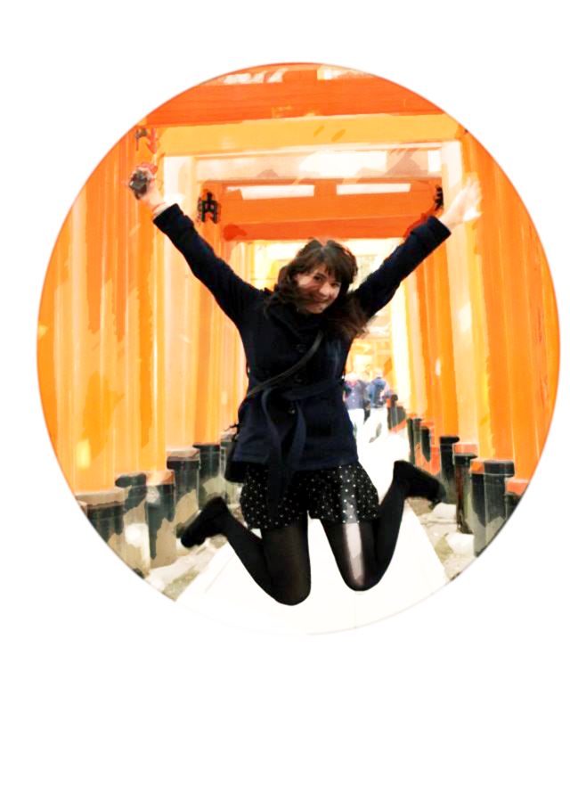

Reviews

The name's Kelley, like the island I don't own. I'm a cat-loving Gryffindor with an interest in design and
Java.
Welcome to my Portfolio!
 Hi! I'm Kelley. I love to create new content, design, video edit, and dabble in any new technology. My interests are far and wide, so I love to learn new things.
I started adulthood with a goal to become the next JK Rowling. A four-year BA Degree and two Customer Service positions later, I think it's safe to say my career plans didn't exactly pan out (one day!). I have always been interested in computers, tinkering with website CSS/html, graphic design, and video editing. I decided to turn these hobbies into a career and enrolled in WeCanCodeIT. I am currently working towards a career in coding.
SKILLS
Adobe Creative Suite | Java | Spring | MVC | CSS | Flexbox | Relational Databases | Source Control/Git
EMAIL: Kelley.Landis@outlook.com
PHONE: 937-212-4871
LINKEDIN: in/kelley-landis-2a326890
GITHUB: klandis10
An icon I designed for a friend's podcast group. Adobe Photoshop.
A Banner created for a friend's podcast group. Adobe Photoshop.